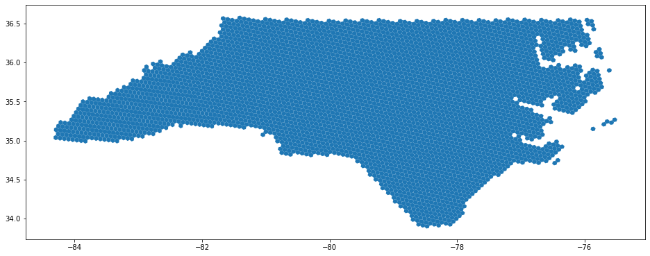
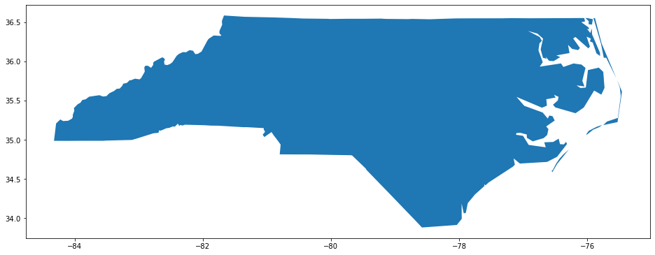
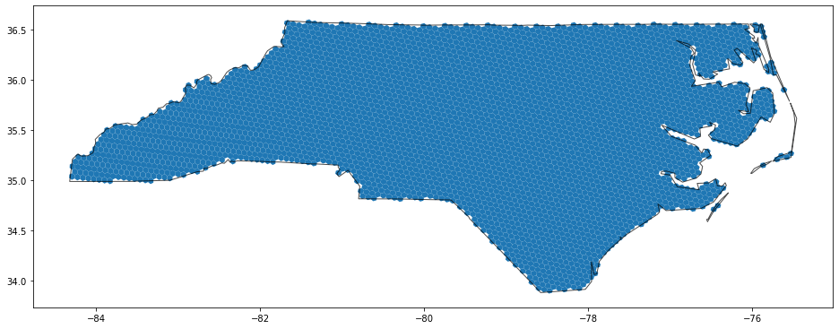
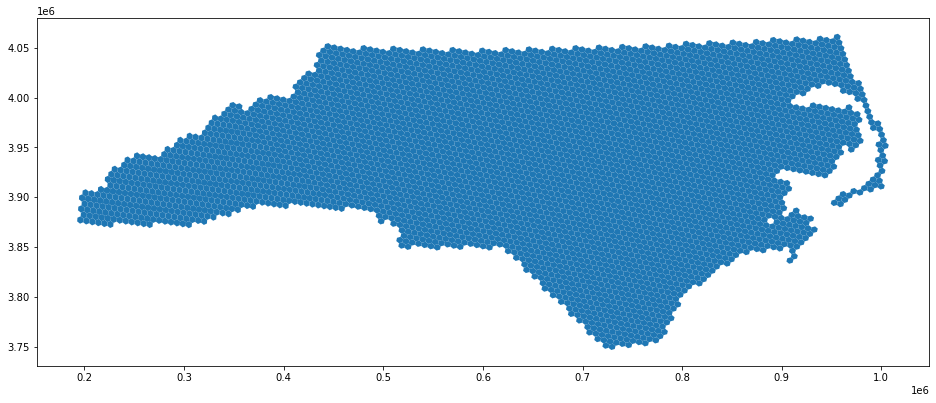
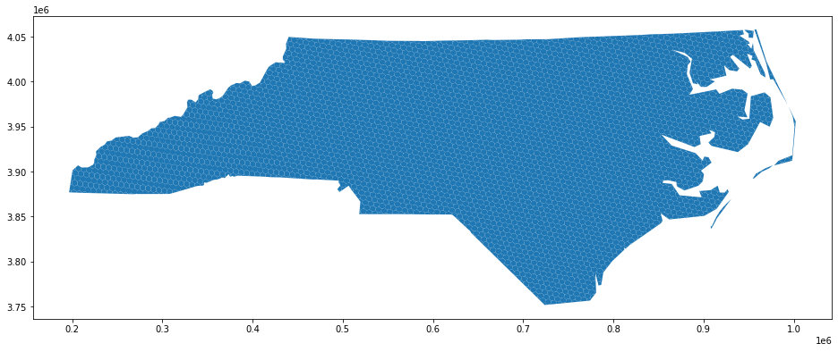
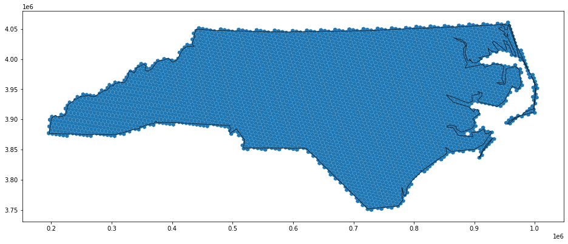

Filling with h3 hexagons¶
[1]:
import tobler
from shapely.geometry import Polygon
import geopandas
import libpysal
%load_ext watermark
%watermark -v -a "serge rey" -d -u -p tobler,libpysal,geopandas
Author: serge rey
Last updated: 2022-04-15
Python implementation: CPython
Python version : 3.10.4
IPython version : 8.2.0
tobler : .0.2.1-262.g6360704.dirty
libpysal : 4.6.2
geopandas: 0.10.2
[2]:
import matplotlib.pyplot as plt
plt.rcParams['figure.figsize'] = (16, 9)
[3]:
sids2 = libpysal.examples.load_example('SIDS2')
gdf = geopandas.read_file(sids2.get_path('sids2.shp'))
Example not available: SIDS2
Example not downloaded: Chicago parcels
Example not downloaded: Chile Migration
Example not downloaded: Spirals
[4]:
gdf.plot()
[4]:
<AxesSubplot:>
[5]:
gdf.crs
[5]:
<Geographic 2D CRS: EPSG:4326>
Name: WGS 84
Axis Info [ellipsoidal]:
- Lat[north]: Geodetic latitude (degree)
- Lon[east]: Geodetic longitude (degree)
Area of Use:
- name: World.
- bounds: (-180.0, -90.0, 180.0, 90.0)
Datum: World Geodetic System 1984 ensemble
- Ellipsoid: WGS 84
- Prime Meridian: Greenwich
[6]:
h = tobler.util.h3fy(gdf, resolution=6)
[7]:
h.plot()
[7]:
<AxesSubplot:>

[8]:
gdfe = gdf.explode(index_parts=True)
gdfe['state']='nc'
gdfe.dissolve(by='state').plot()
[8]:
<AxesSubplot:>

[9]:
f, ax = plt.subplots(1,1, figsize=(16,9))
h.plot(ax=ax)
gdfe.dissolve(by='state').plot(alpha=0.7, facecolor='none', ax=ax);

We see the unfilled spaces near the boundary. This is the issue raised in #146.
Using bufferto ensure complete fill¶
[10]:
gdfutm = gdf.to_crs(gdf.estimate_utm_crs())
[11]:
gdfutm.plot(figsize=(16,9));
[12]:
h = tobler.util.h3fy(gdfutm, resolution=6)
[13]:
hb = tobler.util.h3fy(gdfutm, resolution=6, buffer=True)
[14]:
hb.plot();

[15]:
hbc = tobler.util.h3fy(gdfutm, resolution=6, buffer=True, clip=True)
[16]:
hbc.plot();

[17]:
gdfutm['state']='nc'
f, ax = plt.subplots(1,1, figsize=(16,9))
hb.plot(ax=ax)
gdfutm.dissolve(by='state').plot(alpha=0.7, facecolor='none', ax=ax);

[18]:
gdfutm['state']='nc'
f, ax = plt.subplots(1,1, figsize=(16,9))
hbc.plot(ax=ax)
gdfutm.dissolve(by='state').plot(alpha=0.7, facecolor='none', ax=ax);
[19]:
hbc = tobler.util.h3fy(gdfutm, resolution=5, buffer=True, clip=True)
[20]:
gdfutm['state']='nc'
f, ax = plt.subplots(1,1, figsize=(16,9))
hbc.plot(ax=ax)
gdfutm.dissolve(by='state').plot(alpha=0.7, facecolor='none', ax=ax);
[ ]: